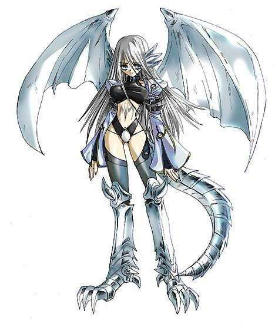

第四百三十五章 兽化型月姬
到底是古代贝尔卡的智慧结晶，至今也被列为极危险的魔导器，她不会让只属于自己的灵魂被其他力量染指。
白龙的力量不能被以任何方式窃取，但龙首只是个形式，构成龙首的只是些许空气中的灵子，因此很轻易的就被夜天之书破坏，并且将构筑龙首的灵子吸收。
不只是构筑龙首的灵子，整个房间里的灵子都被夜天之书席卷一空，蕾莱因此膝盖一软差点跌倒。
她一直在控制房间里的灵子不逸散，也就是说，房间里的灵子和她的精神的相关的，突然被人抢了灵子的控制权，就像是被人突然用力拽了一下一样。
“什么！什么！到底是怎么回事？？”
先是被怪物吃掉，然后是被锁链束缚PLAY，真是奇怪的梦！
作为当事人的疾风完全一副搞不清楚状况的样子。
“你啊，不要乱动啊！”
月姬摇了摇头，疾风的抗拒心理是主要原因，虽然是暴走的魔导器，但目前并没有反客为主的意思，之前的抗拒只是护主的本能而已，而破坏龙首则是遵循疾风的意愿……突然被吃了，谁能不挣扎吗？
月姬的失误？
不，是故意的！
与普通人的优纪和蓝子不一样，想要在疾风灵魂上盖印的话，如果疾风处于无意识状况也可以，但，最好还是有疾风的意志进行配合，至于龙首被破坏……
月姬只是想去除多余的动作，正视她的守护力量的真面目而已！
从黑山君那边交易过来的力量……
真的是如此吗？
黑山君自己也说过，多拉格的力量他也没办法随便干涉。既然如此，她行使的这份能力，白龙的痕迹实在是太深了！
守护力量的表现形式是龙首，白龙的龙首。
守护力量的灵魂印记是龙鳞，白龙的龙鳞。
这，真的是黑山君给她的力量吗？
“可是、真的好吓人啊！而且，这个是什么啊？”疾风抓着暗银的锁链用力的扯了扯，想要把它从身上扯下来，不过本来就不是紧缚的锁链，就像是活着一样在疾风的身上活动着，手短的少女对其完全束手无策。
“这个是你和夜天之书的契约形式，不要抗拒。”月姬微笑着摸了摸疾风的脑袋。
现在她们都还是灵体之姿，虽然空气里的灵子都被疾风吸收了，但是有着白龙力量庇护的她和被夜天之书保护着疾风短时间内都不会被无灵子的环境影响。
“夜、天之书？暗之书？”疾风看着月姬眨了眨眼睛，之前就听对方称呼她的魔导器为夜天之书，但是作为魔导器守护骑士，希格诺姆他们，却都称之为暗之书，真是奇怪呢。
“不要太在意，以后你会明白原委的。”月姬耸了耸肩收回手。
“这样啊……”疾风想了想，也没有追问下去，她突然注意到‘梦’里的月姬姐和自己记忆里的不一样，“虽然是在做梦，不过，月姬姐现在的样子真漂亮呢！”
虽然是半透明的幽灵样子，但是，却完全没有恐怖片里的那种阴森感觉，身上那淡淡的光辉反而让人很温暖。
光在变化，慢慢的变化着，略显暗淡的线条在光中慢慢的显现出来，同时衣服也变少了……诶？！衣服！！
月姬灵体上的衣物正在慢慢的褪去，露出白皙的肌肤……嗯？
“在实体化……”月姬皱着眉抬起自己的手臂看着，她没有魔力完成这一步，而蕾莱的魔力也不足以支撑一个灵体的实体化，也就是说，这是寄宿在幻武兵器里的【青眼白龙】的力量！
灵体化的装束，是月姬记忆里现在的穿着，而实体化的装束是白龙力量的半人化形态——
即狰狞霸气的龙人姿态！
才怪！
光在变化，更快的变化着。
暗淡的光纹烙印在皮肤上化为了让月姬无比熟悉的纹路，而亮一点的光，则在月姬的背后汇聚起来，变的更亮一点却不刺眼。
突然，粗壮的尾巴和强健的的肉翅从光中伸展开来，而月姬的双足也化为了狰狞的利爪。
“寡廉鲜耻……”
月姬皱着眉不愉快的跺了跺龙爪，明明原来一档的兽化龙人型很威武很狰狞很霸气的说！
现在……
尺度超大的呢！
【图片·自己想象.jpg】
“欧萝妲老师？”蕾莱看了看月姬，又看了看墙边的另一个月姬，在刚刚术法被破除的瞬间，她便已经看不到灵体了，失去了灵子环境，她还以为两人的灵魂都回到身体里去了，现在又出现了一个【欧萝妲】老师，这是……灵体的实体化？
好厉害啊！
蕾莱发自内心的感叹，这种事情，在她那边的世界，可是闻所未闻的呢。甚至之前关于【复活】的话题，虽然传说一直都有，但大都是那些愚昧的人的遐想而已，并没有实例支撑，而在这边的世界，似乎对【死】有着高度的研究，【复活】听起来不是什么特别的事情。
真是个厉害的世界！
凭借着这个世界的知识，她的魔法一定能达到前所未有的境界！甚至窥探神之领域也未尝不可能！
“不用那么恭敬了，反正真面目你也看到了，直接叫我月姬或者琪莎拉就可以了。”月姬略显烦躁的抓了抓头发。
被白龙之力搞成现在这幅样子，能高兴才怪，好歹知耻些啊！
好吧，种族不同，世界观也不一样，要知道，幻兽类的生物化为人形时候的衣服啊，其实就是他们的皮毛变得，他们实际是果体的呢，有些家伙甚至会更绝的连衣服都不幻化的出来晃悠，月姬知道自己用人类的道德观念去约束龙是无意义的事情。
另外，这只是白龙力量中的残留记忆，只要适应了力量，加强控制的话，她就能随意的控制装束。
比如……
月姬的脚又变回了原来的白压压的人类小脚丫。
目前，能控制的就只有这个程度了。
适应几天，很快就能完全控制背后的翅膀和尾巴，还有穿着也是。
那么，问题来了——
这个姿态能维持多久？
目前月姬并没有感受到多拉格的力量要衰竭的迹象，但月姬知道，不可能一直维持这个姿态的，这只是龙首被疾风破坏后多拉格的被动反应。
说起来，真要是一直保持这样，那边的身体要怎么办。
(￢_￢)
【上传图片的栏目改版，不能上传图片我还能怎么样，只能你们自己想象啊！这张图我可能上传过，就是白龙女的那张，你们都知道的】【发布后再修改，发现原来的图片上传通道了，我果然是天才，哈哈哈哈啊】【顺便补充下，我找到了一张比较体面的琪莎拉半龙图片】